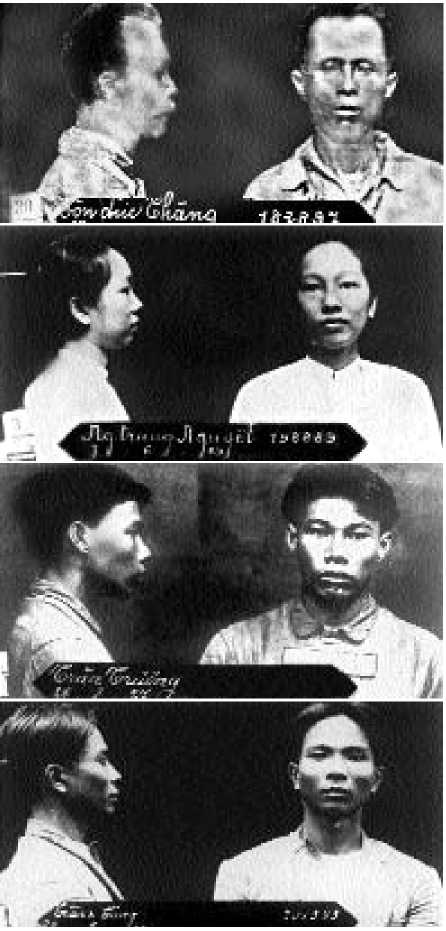
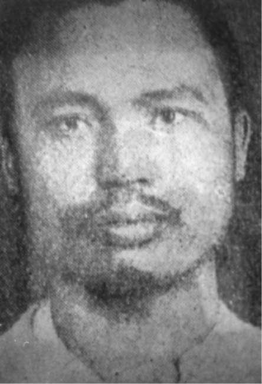

Vụ án mạng đường Barbier, Sài Gòn
Trong đêm 8 rạng ngày 9 tháng 12 năm 1928, một vụ ám sát quá cổ hủ thô bạo đã diễn ra trong giữa phân bộ Thanh Niên Cách Mạng Đồng Chí Hội ở Nam Kỳ. Lê Văn Phát (bí danh Mỹ, Lang) bị đồng chí kết án tử hình vì tội phản bội, theo điều lệ của đảng, vì anh ta ‘’ve vãn người chị em của chúng ta là Thị Nhứt’’. Tội của Phát là ‘’không gạt bỏ tình riêng để toàn tâm toàn ý phục vụ cách mạng’’. Ba người trong số các đồng chí trẻ nhất của Phát (23, 24 và 26 tuổi) phải thi hành án quyết đã được tòa án cách mạng chuẩn y. Tôn đức Thắng chủ trì tòa án, lúc đó 40 tuổi, đứng đầu Kỳ Bộ. Vì đâu, (vì tự ái, vì ghen tương?) án quyết thủ tiêu một đồng chí không tương xứng với ‘’lỗi lầm’’, bí mật ấy vẫn âm u trong bóng tối (64).
Một vụ sát nhân chính thức, ba nạn nhân cùng một lúc, đáp lại vụ ám sát trên: Tòa Đại Hình Sài Gòn ngày 15 tháng 7 năm 1930 kết án tử hình ba người thi hành án quyết trên kia. Tòa chỉ tuyên phạt Tôn đức Thắng (người sau này kế vị Chủ Tịch Hồ chí Minh vào năm 1969) 20 năm tù khổ sai, và Phạm văn Đồng (về sau là Thủ Tướng của chính phủ Hồ chí Minh) 10 năm tù cấm cố. Hai mươi ba người khác trong phân bộ phải chịu án tù tổng cộng 100 năm. Phân Bộ Thanh Niên Nam Kỳ hoàn toàn tan vỡ.
Hai năm, năm tháng sau vụ ám sát, trong hoàn cảnh phong trào nông dân thoái trào và giữa tời kỳ khủng bố trắng, bọn cầm quyền bí mật chuẩn bị hành quyết những người bị kết án tử trong đêm 20 rạng ngày 21 tháng 5 năm 1931.

Những người liên can trong vụ án mạng đường Barbier: Tôn đức Thắng - Nguyễn Trung Nguyệt - Trần Truông (chết chém) - Trần Văn Công (chết chém)
Máy chém dựng sồ sộ trước cổng Khám Lớn Sài Gòn, lính cảnh sát xếp hàng dầy đặc ngăn đón các con đường, chánh Sở Mật Thám có mặt tại đó, tay lăm lăm khẩu súng lục. Vào lúc bốn giờ sáng, ba cái đầu người cách mạng trẻ tuổi rơi xuống sau tiếng hô cuối cùng ‘’Đả đảo đế quốc Pháp’’. Trong giờ liền theo đó trong Khám Lớn, tù chính trị - kể cả tù đàn bà - nổi lên phản đối: ‘’Đả đảo khủng bố trắng! Đả đảo đế quốc Pháp!’’, rùm lên náo động châu thành. Nước vòi rồng chữa lửa tưới ngộp những người tù phản kháng, bọn ngục tốt táo bạo đánh đập họ, cùm chân họ vào khoen sắt.
Sử chính thức cùng truyện ký về lãnh tụ không bao giờ nhắc lại vụ sát nhân thô bỉ. Nó có thể làm lu mờ hình ảnh của ‘’người anh hùng Hắc Hải’’, Tôn đức Thắng được phong danh hiệu như vậy để kỷ niệm cuộc nổi dậy tháng 4 năm 1919 trên chiến hạm Pháp mà người dân thuộc địa là Tôn đức Thắng được đội thủy thủ Pháp chỉ định kéo lá cờ đỏ thượng trưng lên.
Nếu ai muốn biết rõ hơn, thì đây:
Sáng ngày 9 tháng 12 năm 1928, mật thám phát hiện trong sân đàng sau căn phố số 5 đường Barbier (Lý Trần Quán), Sài Gòn, một xác người đàn ông đã bị biến dạng, mặt và tóc cháy xém, tay bị trói quặt sau lưng, họng bị cắt, ngực bị đâm hai chỗ.
Sau này người ta được biết người bị ám sát là Lê Văn Phát, đã từng là đại biểu đi dự Đại Hội lâm thời của Thanh Niên ở Hương Cảng. Sinh tại Tỉnh Bến Tre, Phát làm Thầy Thuốc và cũng là Hương Lễ, một hương chức trông coi việc tế tự ở làng. Khi trở về Sài Gòn vào tháng 6 với danh nghĩa đại diện của Tổng Bộ bên cạnh Kỳ Bộ Nam Kỳ - Kỳ Bộ từ trước đến giờ do Tôn đức Thắng chỉ huy. Thắng là người lớn tuổi hơn hết trong nhóm. Phát bị tòa án cách mạng do Tôn đức Thắng chủ trì, xét xử bí mật và kết án tử hình vắng mặt. Người ta kết tội Phát ‘’lạm dụng quyền hành do chức vụ đảng giao phó để hãm hiếp một nữ đồng chí’’.
Dù cho có những hình phạt nghiêm khắc theo như điều lệ quy định, - mà Nguyễn Đình Tú phải nhớ kỹ khi gia nhập Thanh Niên năm 1926 - thì một hành vi không trong sáng (như uống rượu, cờ bạc, hay lui tới nhà điếm, cưới xin ngoài đảng, khước từ hoạt động chiến đấu do lãnh đạo giao phó) sẽ có thể dẫn tới bị khai trừ, chứ không phải là tử hình như kẻ phản đảng (trốn sang trại địch, tự động hành động không có chỉ thị làm cho các đồng chí mất an toàn, chậm trễ thi hành chỉ thị, làm lộ những bí mật của đảng, âm mưu phá đảng).
Kỳ Bộ thành lập một tòa án vào đêm 29 tháng 11 gồm các ủy viên của Kỳ Bộ Nam Kỳ và Tỉnh Bộ Bến Tre tại nhà Bùi Văn Thêm, số 72 phố Paul Blanchy (Hai Bà Trưng). Trong số các thẩm phán đột xuất này có ba người là Trần Trương, Đặng Văn Sâm, Bùi Văn Thêm đã từng là thợ trong xưởng Kropff, nơi màTôn đức Thắng làm cặp rằng; Trần Trương và Nguyễn Trung Nguyệt là bà con họ hàng với vợ Tôn đức Thắng. Do đó uy tín của Thắng không phải chỉ vì có tuổi. Trước tiên ba thẩm phán trong phiên tòa đó bỏ phiếu chống tử hình. Nhưng áp lực của đa số là 5 thẩm phán kia làm xiêu lòng ba người, họ tự lấn áp ‘’tình cảm cá nhân’’ của mình đúng theo giáo lý (le catéchisme) do Quảng Châu đặt ra.
Trong số các đồng chí của Phát, ai sẽ là người thi hành án? Với nhiệm vụ khủng khiếp này, ba đồng chí trẻ tuổi nhất rút trúng thăm. Đó là Ngô Thiêm, Bí Thư Kỳ Bộ, người Nghệ An; Nguyễn Văn Thinh, Bí Thư của Lê Văn Phát và là Chủ Bút tờ Công Nông Binh, sinh ở Gò Công; và Trần Trương, người Mỹ Tho. Họ còn phải đốt mặt Phát làm biến dạng xác chết theo sáng kiến của Thắng.
Sau đó Ngô Thiêm sang ngay Quảng Châu để báo cáo với Tổng Bộ, mang theo biên bản của tòa án cách mạng. Tổng Bộ phê phán bản án là ‘’không tương xứng với lỗi lầm’’ rồi tuyên bố giải tán Kỳ Bộ Nam Kỳ.
Mười sáu ngày sau vụ ám sát, Sở Mật Thám nhận được tin tức do nhân viên ‘’mật vụ ở quốc ngoại’’ gửi về, nói đến tờ biên bản trên. Từ tháng 2 Tôn đức Thắng đã bị bắt, rồi trong mùa Hè, hơn hai chục chiến sĩ, dù có hay không dính líu tới vụ ám sát lọt vào tay mật thám.
Một khi phát giác xác chết, mật thám mở đầu tung mạng lưới bủa giăng vây bắt các tổ chức bí mật. Vì thế không phải chỉ 8 người mà là 45 người bị cáo phải đồng lượt ra trước Tòa Đại Hình Sài Gòn, người thì bị khép tội ‘’giết người có chủ ý trước’’, người thì bị cáo ‘’âm mưu phá rối trị an Nhà nước’’. Các trạng sư đề nghị xử riêng hai vụ việc nhưng bị bác bỏ. Tòa chỉ nhượng bộ ở một điểm là: Hai vụ việc được xem xét lần lượt, và mỗi phạm nhân sẽ chỉ bị hỏi về những tội trạng mà mình có dính líu thôi. Nhưng dù sao xử án cùng một phiên tòa hai vụ việc hoàn toàn khác nhau cũng có một cái gì đó có tính chất gán ghép xáo lộn cốt để ảnh hưởng dư luận theo chiều hướng chính quyền.
Một năm rưỡi sau vụ ám sát mới đem xét xử, vào ngày 15 tới 19 tháng 7 năm 1930. Bầu không khí xã hội lúc đó đang hừng hực. Phong trào nông dân sôi động ở Nam Kỳ, còn ở Bắc Kỳ, 13 cái đầu của Việt Nam Quốc Dân Đảng bị rụng dưới máy chém ngày 17 tháng 6 ở Yên Báy.
Theo tờ An Nam Hướng Truyền (Écho Annamite), Tôn đức Thắng tuyên bố như sau:
Ngô Thiêm đã dẫn dắt tôi vào hoạt động cách mạng. Tôi gia nhập Hội Thanh Niên Cách mạng năm 1927. Tôi là đại diện của Tổng Bộ Quảng Châu ở Kỳ Bộ Nam Kỳ. Những mưu toan của Lang đối vớiem gái chúng tôi là Thị Nhứt khiến tôi lên án kẻ phạm tội đó. Tôi không hề đứng về phía tán thành cái hình phạt quyết liệt đó. Dù sao tôi cũng vì kỷ luật buộc phải tuân theo đa số. Chính tôi đã ra lệnh cho Thinh làm biến dạng bộ mặt xác chết.
Còn Phạm văn Đồng, bị tố cáo âm mưu, thì tuyên bố rằng Đại Hội tháng 5 năm 1929 ở Hương Cảng quyết định là các đồng chí có dính líu đến việc thủ tiêu người đại diện của Tổng Bộ vẫn có thể tái gia nhập đảng. Còn chính mình ông ông cũng hối tiếc vì thoạt tiên ông tán thành xử tử Phát, vì ông tưởng Phát ‘’sắp phản đảng’’ (theo nguyên văn).
Từ trong văn bản biện hộ của các Trạng Sư Gaccobbi, Loye, Bernard, Masse, Desgrand, Ferrand, Pinaud, Tavernier và Cancellieri, chúng tôi ghi nhớ lời nhận xét của Cancellieri vì nó gợi lại lời nhận xét của Nguyễn An Ninh trước tòa án năm trước:
Người ta trách cứ những thanh niên nầy tham gia các hội kín.
Thế nhưng những hội kín đó bao giờ cũng vẫn có, bởi lẽ họ chẳng bao giờ những thanh niên nầy có thể tự do tập hợp với nhau, bởi lẽ họ hiện thân những kẻ bị áp bức. Có một tình thế căng thẳng hiển hiện, nhưng người ta không tìm biện pháp chữa chạy. Cái đó đơn giản thôi, biện pháp đó là ban bố tự do, cái tự do mà chúng tôi đòi hỏi cho họ được hưởng cũng như ta đang được hưởng. Đó là vấn đề cái nồi hơi và những cái sú páp an toàn của nó. Hơi nước sôi phải thoát ra, người ta không thể ép nén nó mãi được. Nếu các ông muốn ở đây có hòa bình, trước hết hãy thực hiện công lý, không phải là cứ xây dựng những khám tù mà các ông làm dịu tình hình được. Các ông đã gieo thù hận ở đây, các ông sẽ thu nhận thù hận.
Ngày 18 tháng 7 năm 1930, vào lúc 20 giờ, chủ tịch phiên tòa hạ lệnh ‘’Giải tỏa phòng xử án, còng tay các tù nhân ngay sau khi tuyên án và dẫn chúng đi ngay, từng nhóm nhỏ.’’
Án quyết như sau: Tử hình 3 người là Trần Trương, Ngô Thiêm và Nguyễn Văn Thinh. Tôn đức Thắng 20 năm khổ sai. Đặng Văn Sâm và Bùi Văn Thêm 10 năm khổ sai. Nguyễn Trung Nguyệt 8 năm khổ sai.
Cấm cố: 23 đảng viên hoặc cảm tình Đảng Thanh Niên, trong đó có Phạm văn Đồng, tổng cộng hơn 100 năm tù. 3 đảng viên Tân Việt, trong đó có Võ công Tôn, nguyên là Hội Đồng Địa Hạt Chợ Lớn, cùng bị bắt với Nguyễn An Ninh năm trước; Nguyễn phương Thảo (sau này tức là NguyễnBình, tham gia Việt Minh năm 1945); và Trần huy Liệu, nhà báo (chuyển theo cộng sản ở Côn Sơn, sau này là Bộ Trưởng trong chính phủ Hồ chí Minh), tổng cộng 23 năm rưỡi.
Có 4 bị cáo được tha.
Những người bị án tù cấm cố, cũng như những người bị khổ sai, phần lớn đều bị đưa ngay ra nhà ngục Côn Đảo. Chỉ riêng nữ đồng chí Nguyễn Trung Nguyệt ngồi tù 8 năm tại Khám Lớn Sài Gòn.
Người ta sửng sốt vì lứa tuổi trẻ trung của những người bị kết án. Trong mười người thì chín người chỉ có từ 17 đến 28 tuổi; tuy nhiên nhiều người trong số đó đã từng bị kết án tù với thời hạn ngắn. Trong số những người bị kết án chỉ có một người duy nhất làm báo chuyên nghiệp là Trần huy Liệu, Việt Nam Quốc Dân Đảng, còn bao nhiều người là thư ký và giáo viên dạy trường tư, như Phạm văn Đồng, họ tự viết các tờ báo tuyên truyền cổ động. Một số chiến sĩ làm ở bến cảng và xưởng cơ khí Sài Gòn, chúng ta hiếm thấy có thợ thủ công, chỉ nhận ra hai nhà nông, tiểu địa chủ.
Quốc Tế Cộng Sản trở mặt, quá trình Thanh Niên vô sản hóa
Tại Đại hội lần thứ 6 Quốc Tế Cộng Sản (tháng 7 năm 1928) khi nói tới sự thất bại của cuộc cách mạng vô sản Trung Hoa, Boukharine cuối cùng phải công nhận sự hợp tác giai cấp với giai cấp tư sản là nguyên nhân thất bại cơ bản, ‘’từ đó đảng ta mất độc lập, đôi lúc trở thành chướng ngại cho phong trào quần chúng, cản trở cuộc cách mạng ruộng đất và ngăn cản phong trào công nhân’’.
Sự thừa nhận đó chẳng may lại đi kèm theo một quan niệm lạc quan nguy hiểm về thời kỳ đang mở ra, mà lúc đó Molotov gọi là ‘’Thời kỳ thứ ba’’, thời kỳ thế giới tư bản điều tàn sụp đổ: (Thời kỳ thứ nhất, từ 1918 đến Cách Mạng Thợ Thuyền Đức thất bại cuối năm 1923, đặc trưng khủng hoảng kinh tế sâu sắc của chủ nghĩa tư bản ở thời kỳ đế quốc chủ nghĩa, và cao trào cách mạng Châu Âu. Thời kỳ thứ hai là từ Đại Hội Quốc Tế Cộng Sản năm 1924 đến Đại Hội 1928, đặc trưng thế giới tư bản ổn định tạm thời cùng tình hình phong trào vô sản ở thế thủ).
Xuất phát từ cả hai quan điểm đó, Quốc Tế Cộng Sản thay đổi hoàn toàn sách lược đối với các xứ thuộc địa và bán thuộc địa, tuyên bố chấm dứt sự nhập khối với các đảng quốc gia, xây dựng các đảng cộng sản độc lập đối với giai cấp tư sản, thực hiện đường lối đấu tranh giai cấp, thực hiện vô sản hóa các đảng cộng sản - đại lược là theo như ý kiến Trotski bênh vực đối với cách mạng Trung Hoa trước khi người bị khai trừ khỏi đảng cộng sảnNga tháng 11 năm 1927. ‘’Quần chúng’’ các nước thuộc địa và phong trào của họ sẽ phát triển dưới sự chỉ đạo của ‘’giai cấp vô sản chính quốc’’, phải hiểu theo nghĩa bóng là theo chỉ đạo của bọn quan liêu Nga.
‘’Xuống đường và tranh đấu trực tiếp cướp chính quyền’’ là những khẩu hiệu được Ban chỉ đạo Quốc Tế Cộng Sản đưa vào chương trình hoạt động cấp thời. Quốc tế thay đổi đường lối, thúc đẩy Thanh Niên Cách Mạng Đồng Chí Hội nhanh chuyển hóa thành đảng cộng sản. Thế nhưng nhận định sai lầm về thời kỳ đang sắp đến sẽ dẫn tới hành động phiêu lưu bi thảm trong ba Kỳ ở Việt Nam. ‘’Thời kỳ thứ ba của những sai lầm’’,như Trotski đã gọi, thời kỳ đó khởi đầu.
Cho tới lúc bấy giờ Thanh Niên xây dựng tổ chức chính là trong tầng lớp nông dân nghèo và trí thức ở các Tỉnh Hải Dương, Thái Bình, Bắc Ninh (Bắc Kỳ), Nghệ An và Hà Tĩnh (Bắc Trung Kỳ) cho tới vùng đồng ruộng miền Tây Nam Kỳ.
Bây giờ phải hoạt động trong tầng lớp thợ thuyền. Ngô gia Tự, người lãnh đạo phân bộ Bắc Kỳ tập hợp các đồng chí lại để phác ra một kế hoạch vô sản hóa thực tiễn: Từ nay các chiến sĩ sẽ thâm nhập vào ‘’địa ngục than’’ ở Mạo Khê, Uông Bí, Cẩm Phả - nơi vô sản công nghệ tập trung đông đảo nhất trong các nhà máy dệt Nam Định, nhà máy xi măng Hải Phòng, các xưởng xe hỏa Trường Thi ở Trung Kỳ, cho tới tận các sở cao su ở Nam Kỳ, nơi mà một số vô sản nông nghiệp cu-li nô lệ đã tự phát nổi dậy chống lại sự đối xử vô cùng tàn bạo, bằng cách ám sát những tên cai phu người An Nam cũng như người Pháp, đặc biệt là trong các sở cao su Michelin ở Phú Riềng.
Dĩ nhiên là phải đi tới chỗ chuyển đổi không phải là không sóng gió, Thanh Niên từ ‘’một đảng đoàn kết mọi người An Nam để giải phóng dân tộc’’ thành một đảng giai cấp công nhân và nông dân.
Từ ngày 1 đến 9 tháng 5 năm 1929, Thanh Niên tổ chức đại hội toàn quốc ở Hương Cảng, nhóm 17 đại biểu ở Trung Hoa, ở ba Kỳ Việt Nam và ở Xiêm. Các đại biểu Bắc Kỳ là Ngô gia Tự, Trần Văn Cung (Quốc Anh) và Nguyễn Tuân (Kim Tôn) đòi phải chuyển ngay Hội thành một đảng bolchevique. Tổng bộ không chấp nhận, họ xô cửa ra về rồi bị khai trừ vì ‘’không tuân kỷ luật’’.
Những ngày cuối cùng của Thanh Niên diễn ra như thế. Kết thúc công việc của đại hội bằng việc phát hành một bản chương trình-tuyên ngôn dưới tiêu đề ‘’Vô sản, hãy đoàn kết lại!’’, phù hợp với nghị quyết của đại hội 6 Quốc Tế Cộng Sản, thế mà vẫn chưa tự nhận là một đảng cộng sản. Cái danh hiệu này khó mà đặt ở một nước Trung Hoa phản cộng của Tưởng Giới Thạch, nơi mà Tổng Bộ đã dời trụ sở từ Quảng Châu sang Ngô Châu ởQuảng Tây. Tổng Bộ viết bài trong tờ Thanh Niên để biện minh việc khước từ danh hiệu đó, đưa ra những lý do chính trị: Trước kia chúng ta chỉ phát động một cuộc cách mạng dân tộc nhằm đoàn kết mọi lực lượng cách mạng để giải phóng cho nhân dân Việt Nam, và 4/5 số đảng viên được tuyển trong tầng lớp trí thức và tiểu tư sản, họ chiếm đoạt những vị trí chỉ huy; chúng ta chua biết làm thế nào để tổ chức các chi bộ trong các xí nghiệp, các đảng viên của chúng ta đều không biết chi là ‘’dân chủ tập trung’’; chúng ta chua đến độ truởng thành để có thể thành lập một đảng Bolshevik (65).
Đông Dương Cộng Sản Đảng ra đời
Từ Thanh Niên tan rã bước chuyển tới chỗ thành lập một đảng cộng sản thống nhất ở Việt Nam sẽ trải qua nhiều giai đoạn kéo dài trong gần một năm.
Vào tháng 6 năm 1929, Kỳ Bộ phân liệt ở Bắc Kỳ tập hợp các Thành Bộ Hà Nội, Hải Phòng và các Tỉnh Bộ Nam Định, Thái Bình, Bắc Ninh tự thành lập đảng cộng sản Đông Dương.
Quốc Anh, người Trung Kỳ, cùng với hai đảng viên phân liệt Bắc Kỳ bắt đầu chiến dịch tuyên truyền trong cả nước. Họ phân phát bản tuyên ngôn phê phán, các tờ báo, các tập sách tố cáo ‘’tinh thần tiểu tư sản’’ của Thanh Niên Hội, và sau đó vài tháng, họ lập ra một đảng cộng sản Đông Dương
Về phía Thanh Niên, Tổng Bộ cũng bí mật thành lập một đảng đặt tên là An Nam cộng sản đảng để tranh giành ảnh huởng.
Ở Nam Kỳ, Ngô gia Tự vào đó từ tháng 7 và kết nạp được một số đảng viên, đặc biệt gặp một người hoạt động tích cực trong Thanh Niên là Đào hưng Long. Anh nầy từ đó trở đi làm đại diện đặc biệt (đặc ủy) của đảng cộng sản Đông Dương tại miền Tây Nam Kỳ rồi sau này anh đứng về phía Tả Đối Lập. Như vậy đảng cộng sản Đông Dương có thể phát hành báo chí khắp ba kỳ: Tờ Búa Liềm do ban chấp hành trung ương ở Bắc Kỳ in ấn; tờ Bolcheviqueở Trung Kỳ và tờ Cờ Cộng Sản ở Nam Kỳ.
An Nam cộng sản đảng cạnh tranh với đảng cộng sản Đông Dương cũng tuyển đảng viên ở trong nước và cũng tung ra các tờ báo chiến đấu riêng của họ: Tờ Công Nông Binh và tờ Học Sinh, đồng thời cũng như đảng cộng sản Đông Dương, họ cho phát hành tờ Bolchevique.
Nói chung, từ Bắc chí Nam, tổ chức Thanh Niên tan rã, các phân phái đều tự xung là ‘’cộng sản’’.
Những phần tử lẻ tẻ của Tân Việt cũng như của Hội kín Nguyễn An Ninh gia nhập hoặc đảng này hoặc đảng kia, trong hai tổ chức cộng sảnmới thành lập.
Đảng cộng sản Đông Dương đang thành lập đã kết án tử hình một đảng viên bị quy tội phản đảng. Ngày 3 tháng 2 năm 1930, trên bờ kê vắng vẻ ở Hải Phòng có một xác chết trên áo có gài một văn bản bằng chữQuốc Ngữ như sau:
Kim Tôn, đảng viên đảng cộng sản Đông Dương, bị đế quốc Pháp bắt ngày 11 tháng 10 năm 1929 tại bến đò Tân Đệ, đã không thực hiện nhiệm vụ của một đảng viên cộng sản. Tòa án cách mạng đã kết án y về tội:
1.- Không tuân thủ nội quy của đảng;
2.- Đã thông báo cho đế quốc Pháp về tình hình và tổ chức của đảng;
3.- Đã tố cáo và nhận mặt, ngày 16 tháng giêng năm 1930 trước tòa, những đồng chí đã tham gia vào phong trào cộng sản ở Nam Định. Do đó, tòa án cách mạng kết án tử hình Kim Tôn. Bản án được thi hành ngày 2 tháng 2 năm 1930.
Mục đích lời công bố này cốt để cảnh cáo những kẻ phản đảng, phản cách mạng và giai cấp vô sản Việt Nam.
Việt nam cộng sản đảng (66)
Thanh Niên, đảng cộng sản Đông Dương cùng An Nam cộng sản đảng đều muốn được Moscou công nhận và trợ giúp. Moscou hứa sẽ ủng hộ với điều kiện rõ ràng là các đảng phải hợp nhất trước đã. Ngày 3 tháng 2 năm 1930, đại hội hợp nhất họp ở Hương Cảng, do Nguyễn ái Quốc chủ trì. Ông từ Xiêm tới và vẫn đại diện Quốc Tế Cộng Sản.
Ngoài Nguyễn ái Quốc ra, còn có 7 đại biểu (3 Thanh Niên, 2 đảng cộng sản Đông Dương và 2 An Nam cộng sản đảng), đồng tuyên bố thành lập Việt Nam cộng sản đảng. Về vấn đề này, cần nhấn mạnh rằng tên gọi Việt Nam có sức nặng gây xúc động mạnh trong tầng lớp trí thức tiểu tư sản, Việt Nam là cơ sở của đảng quốc gia Việt Nam Quốc Dân Đảng đã là đối thủ giành ảnh hưởng với Thanh Niên, do đó Nguyễn ái Quốc - dù cần phải theo xu hướng chính trị nào, cũng không muốn để đảng đó một mình dùng hai tiếng Việt Nam làm lợi khí riêng cho mình. Moscou sẽ can thiệp nhằm bỏ cái tên có hơi hướng quốc gia đó vào tháng 10.1930 và chấp nhận cái tên đảng cộng sản Đông Dương mà Phân Bộ Bắc Kỳ đã chọn trước đó.
Luận cương chính trị của đảng hợp nhất, cũng dựa trên những quan điểm của đại hội 6 Quốc Tế Cộng Sản về vấn đề thuộc địa, như đảmg cộng sản Đông Dương đã đề ra: Đặc trưng cuộc cách mạng phải tiến hành là cuộc cách mạng tư sản dân quyền, do lực lượng quần chúng công nhân và nông dân đứng lên lật đổ nên đô hộ của Pháp và đập tan ‘’bọn phong kiến’’ (triều đình, bộ máy quan trường,đại địa chủ) nhằm tới cuộc cách mạng ruộng đất (ruộng về tay người cày). Giai đoạn này chuẩn bị cho cuộc cách mạng xã hội chủ nghĩa.
Ban chấp hành trung ương đảng không đặt trụ sở tại Trung Hoa nữa mà dời về Hải Phòng, sau đó đặt tại Sài Gòn vào tháng 10. Nguyễn ái Quốc không tham gia ban chấp hành, vẫn giữ tư cách là người trung gian giữa Quốc Tế Cộng Sản với đảng cộng sản Đông Dương
Đảng cộng sản xây dựng trên cơ sở cấu trúc cũ của Thanh Niên, chỉ có thay đổi tên gọi (Tổng Bộ đổi thành Trung Ương, Xứ Ủy thay cho Kỳ Bộ...). Sau khi họp nhất, đảng cộng sản ở Bắc Kỳ có các thành ủy Hà Nội, Hải Phòng, các tỉnh ủy Nam Định, Thái Bình, Bắc Ninh. Ở Trung Kỳ các tổ chức của đảng chủ yếu phát triển ở phía Bắc và miền Trung. Còn ở Nam Kỳ, Mật thám ước tính số đảng viên vào tháng 3 năm 1930 là 53 đảng viên chính thức, 47 dự bị, phân bố trong 22 chi bộ, trong đó 11 chi bộ ở Sài Gòn, 5 ở Chợ Lớn, 5 trong các Tỉnh Sa Đéc, Cần Thơ, Vĩnh Long và 2 ở Mỹ Tho; các tổ chức xung quanh đảng bao gồm 10 công hội đỏ gồm 234 công nhân vùng Sài Gòn-Chợ Lớn và 4 nông hội họp khoảng 465 nông dân (97).
Ngày 1 tháng 5 năm 1930, ba tháng sau đại hội hợp nhất ở Hương Cảng, đảng cộng sản phát động phong trào nông dân có tổ chức.
Nếu như ở buổi đầu ‘’thời kỳ thứ ba’’, đảng có đôi lúc phê phán Nguyễn ái Quốc, người sáng lập, cho rằng tư tưởng của Quốc ‘’còn lưu tồn chủ nghĩa quốc gia’’ và ‘’những lý luận của Quốc mang tính chất cơ hội chủ nghĩa’’(68), thế mà đảng cộng sản Đông Dương vẫn nườm nượp tuân theo đường lối ‘’gấp khúc’’ (en zigzag) của Staline, không hề lay chuyển. Cái ‘’đường lối’’ đã đưa phong trào nông dân đi đến thất bại đẫm máu những năm 1930-1931.
Sáu năm sau, sau hiệp ước Laval-Staline, đảng cộng sản Đông Dương hủy bỏ đấu tranh giai cấp và đấu tranh chống đế quốc chủ nghĩa, rồi cùng với đảng cộng sản Pháp, ủng hộ một Mặt Trận Bình Dân, để cùng gìn giữ toàn vẹn lãnh thổ của đế quốc thuộc địa Pháp. Cuối cùng, sau Hiệp Ước Hitler-Staline, đảng cộng sản Đông Dương lại chuyển biến Nam Kỳ thành lò sát sinh khổng lồ năm 1940. Đồng thời họ phát động một phong trào cuồng nhiệt và mơ hồ chống xu hướng Trotski, chẳng kém gì chủ nghĩa ngu muội dân của các phái tôn giáo cuồng nhiệt. Nối gót Staline, họ ám sát những người cách mạng đã phê phán chính trị tai hại sát nhân của họ, những người đứng về Đệ Tứ Quốc Tế.

Nguyễn Thái Học
(1902-1930)
CHÚ THÍCH
64.- Archives Outremer, Aix-en-Provence. 7F55; L'Echo annamite, La Dépêche d'Indochine, L'Impartial, ngày 17, 18 và 19 tháng 7 năm 1930.
65.- Thanh Niên, 23.9.1929.
66.- L. Roubaud, Viet-Nam, la tragédie indochinoisse, Paris 1931, trang 99. Người ta ngỡ ngàng vì cái tên ký dưới là Việt Nam cộng sản đảng, một tên gọi chỉ có từ sau Hội Nghị hợp nhất ở Hồng Kông ngày 3.2.1930. Có lý Roubaud nhầm với An Nam cộng sản đảng hay Đông Dương cộng sản đảng chăng?
67.- Archives Outremer, Aix-en-Provence. Slotfom III 48.
68.- Bolchevik số 5, tháng 12 năm 1934, do D. Hémery dẫn trong Révolutionnaires vietnamiens...trang 53.